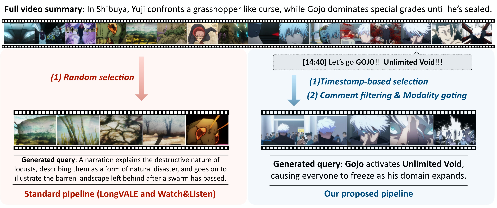
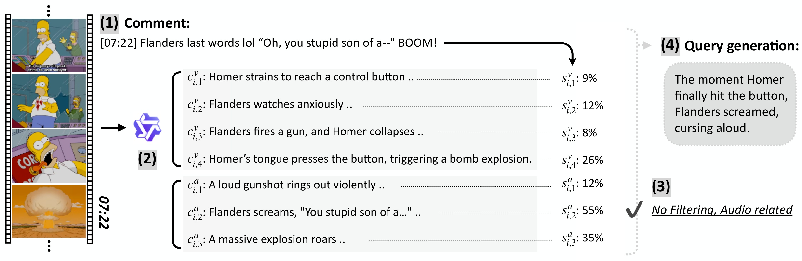
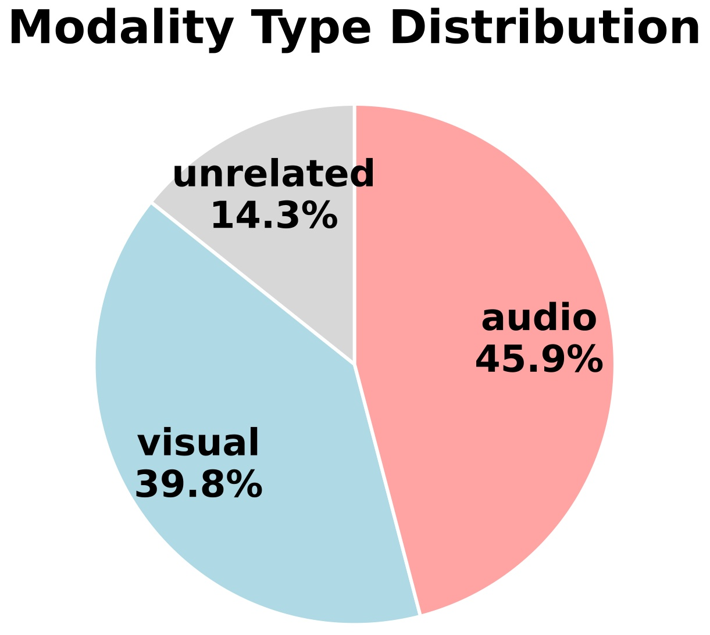
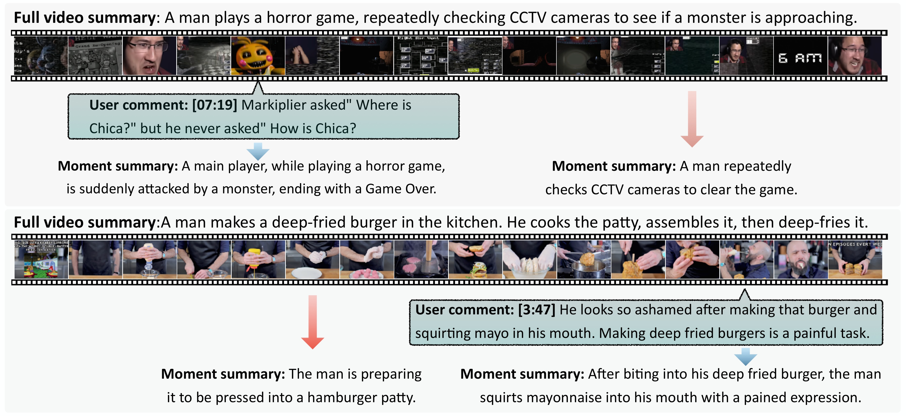
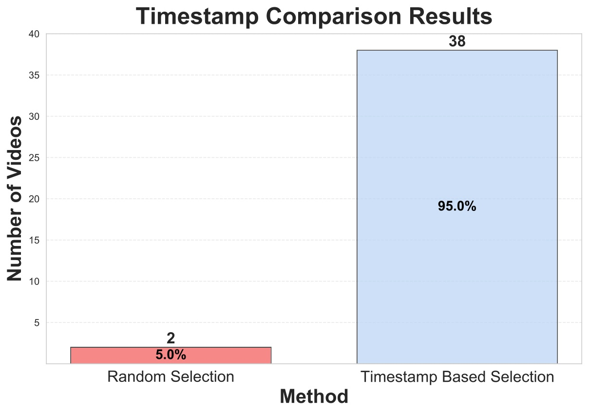
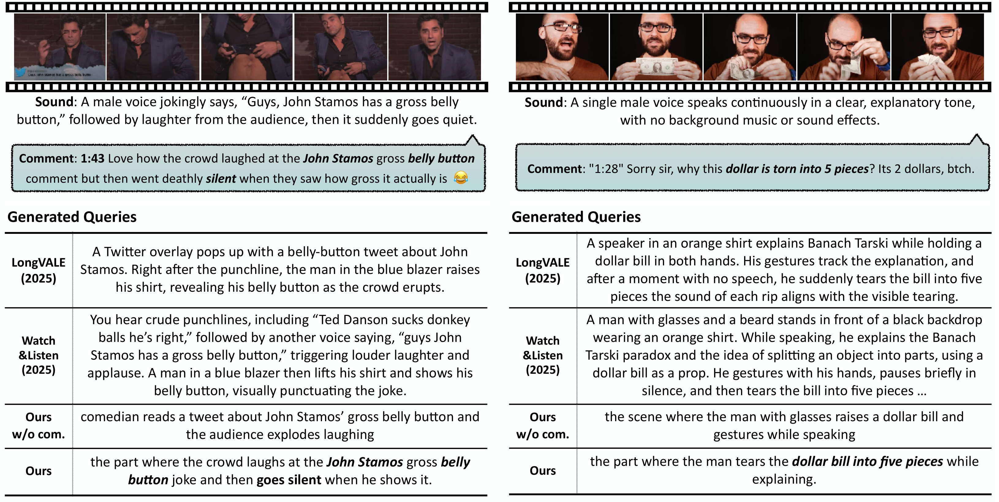
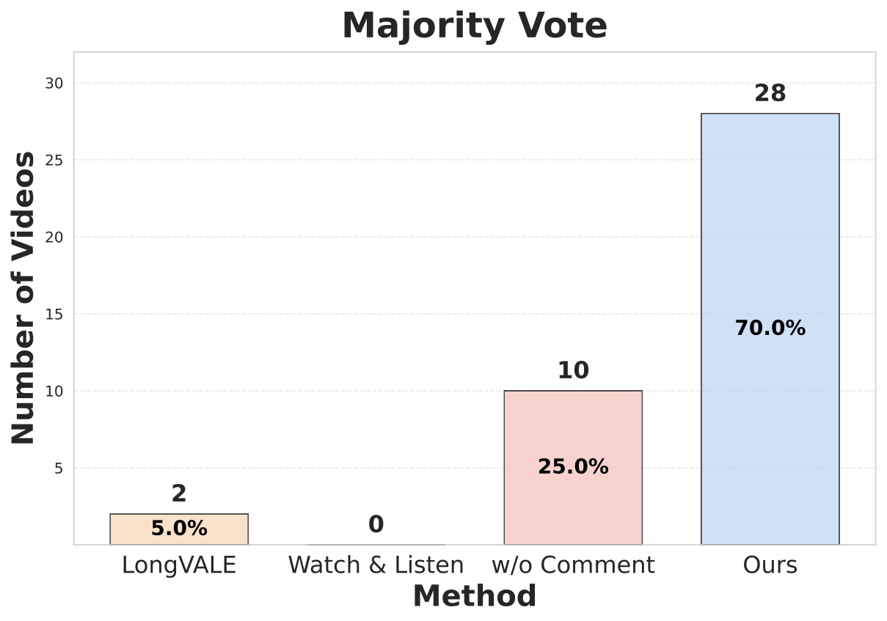

VMR 데이터셋에는 무엇이 빠져 있었나
흐름: VMR 소개 → 기존 데이터셋 구축 방식 → 두 가지 근본 한계 → TCVP의 출발점
Video Moment Retrieval(VMR)은 자연어 쿼리가 주어졌을 때 영상 속에서 해당하는 시간 구간을 찾아내는 태스크다. Netflix에서 "전에 봤던 그 장면"을 다시 찾거나, 영상 편집자가 긴 촬영본에서 핵심 순간을 골라낼 때 쓰이는 기술이다.
VMR 모델을 학습·평가하려면 데이터셋이 필요하다. 기존 데이터셋은 크게 두 계열이었다:
- 인간 주석: 어노테이터가 영상을 짧게 보고 쿼리를 쓴 뒤 구간을 표시 (QVHighlights 등)
- 자동 생성: 시각·음성 변화에 따라 영상을 분할하고, 각 구간에 대해 LLM으로 캡션 생성 (LongVALE, Watch&Listen 등)
이 논문은 두 방식 모두에 근본적인 한계가 있다고 진단한다.
"This pipeline often yields moments that are weakly aligned with real user interest and queries that are verbose and descriptive rather than search-oriented."
한계 1 — 구간 선택이 실제 시청자 관심과 괴리: 인간 주석은 시간 제약으로 영상을 충분히 못 보고, 자동 생성은 중요도와 무관하게 사실상 무작위로 구간을 뽑는다. 결과적으로 아무도 검색하고 싶지 않을 평범한 장면들이 데이터셋에 들어간다.
한계 2 — 쿼리가 캡션처럼 생겼다: 영상 내용을 묘사하는 방식으로 쿼리를 만들다 보니 실제 사용자가 검색창에 칠 법한 표현과 거리가 멀다. "남자가 달러 지폐를 들고 설명하는 장면"처럼 장황한 캡션이 쿼리가 된다.
한계 3 — 시각만 다룬다: 유튜브 댓글 분석에 따르면 댓글의 약 절반은 오디오 콘텐츠를 지칭한다. 시각 정보만으로 구축한 데이터셋은 이 절반을 놓친다.

TCVP: 댓글이 답이다
흐름: 핵심 아이디어 → 4단계 파이프라인 상세
핵심 아이디어
유튜브의 타임스탬프 댓글은 두 가지 정보를 동시에 담고 있다:
- 어떤 구간이 중요한가 — 시청자가 직접 타임스탬프를 찍었다
- 그 구간을 어떻게 검색하는가 — 댓글 표현이 실제 검색 의도를 반영한다
유튜브 타임스탬프 댓글을 VMR 데이터셋 구축의 신호로 쓰자는 것이 TCVP의 핵심이다.
물론 댓글을 그대로 쓸 수는 없다. "07:22 lol" 같은 무의미한 댓글도 많고, 댓글이 시각적 반응인지 청각적 반응인지도 구분해야 한다. 이를 해결하기 위해 Comment Filtering과 Modality Gating을 도입한다.

1단계: 영상과 댓글 수집
구독자 100만 이상 유튜브 채널에서 영상을 수집하고, 타임스탬프가 포함된 댓글만 남긴다. 같은 타임스탬프에 여러 댓글이 있으면 좋아요 수가 가장 많은 댓글 하나만 유지한다. 좋아요 수가 많다는 것은 그 순간이 많은 시청자에게 중요하다는 신호다. 각 영상당 좋아요 상위 20개 타임스탬프 댓글을 사용한다.
2단계: 모달리티별 캡셔닝
각 타임스탬프 댓글 u_i에 대해, 해당 시점 전후 9초 창에서 Qwen2.5-Omni로 시각 캡션과 오디오 캡션을 각각 20단어 이내로 생성한다.
100개 타임스탬프를 샘플링해 윈도우 크기별 모멘트 커버리지를 측정했을 때, ±9초가 97%를 커버한다. 비대칭 12초 창([-9s, +3s] 또는 [-3s, +9s])은 92%로 동일해서 타임스탬프 전후가 대칭적으로 중요함을 확인했다. 더 넓은 창은 수확체감 + 계산비용 증가.
3단계: Comment Filtering & Modality Gating
Comment Filtering: 댓글 u_i와 주변 캡션 문장들 사이의 코사인 유사도(Qwen-3 임베딩)를 계산한다.
s_i^v = max_k Sim(u_i, c_{i,k}^v)
s_i^a = max_k Sim(u_i, c_{i,k}^a)
max(s_i^v, s_i^a) < τ (= 0.3) 이면 unrelated로 분류해 제거한다.
- 유지 예시 (s ≥ 0.3): "the way he tears the dollar bill while explaining is genius" (0.43)
- 제거 예시 (s < 0.3): "this is so good" (0.22), "lol" (0.11)
Modality Gating: 필터링을 통과한 댓글은 시각/오디오 중 더 높은 유사도를 가진 모달리티로 분류한다.
vision-related if s_i^v ≥ s_i^a
audio-related if s_i^a > s_i^v

4단계: 쿼리 생성
GPT-4.1에 타임스탬프 댓글 + 해당 모달리티 캡션을 함께 제공하고, 댓글에서 키워드를 직접 추출해 자연스러운 검색 쿼리를 생성하도록 지시한다. 시각 댓글은 시각 캡션으로, 오디오 댓글은 오디오 캡션으로 조건화해 모달리티 불일치를 방지한다.
정말 더 나은가? — 정성·정량 평가
흐름: 모멘트 선택 비교 → 쿼리 품질 비교 → 인간 평가 결과
모멘트 선택 비교

인간 평가: 40개 샘플(3명 어노테이터, 다수결)에서 댓글 기반 선택이 95%, 무작위 선택이 5%로 압도적인 선호를 보였다.

쿼리 품질 비교

인간 평가: LongVALE, Watch&Listen, ours w/o comments, ours w/ comments 4개를 비교하게 했을 때:
| 방법 | 선호율 |
|---|---|
| Watch&Listen | 0% |
| LongVALE | 5% |
| Ours w/o comments | 25% |
| Ours w/ comments | 70% |

기존 VMR 모델을 돌려보면
흐름: 평가 설정 → MLLM 결과 → 임베딩 모델 결과 → 시사점
TCVP 데이터셋에서 기존 VMR 모델들의 성능은 전반적으로 낮다 — 특히 오디오 모달리티에서.
평가 방법: 두 가지 설정
- MLLM only: 100프레임 샘플링 후 단일 타임스탬프 예측 (Recall@1, 오차 ±10초 이내)
- MLLM with segment captions: 10초 단위 분할 → 각 구간 캡션 생성 → Qwen-3 임베딩으로 유사도 기반 랭킹 (Recall@K)
주요 발견:
1. 자막(ASR)이 오디오 쿼리의 핵심 단서다
Gemini 2.5 Flash 기준: 시각 입력만으로는 Audio R@1이 4.0에 그치지만, 자막을 추가하면 +22.0 향상. 원시 오디오 파형을 추가해도 거의 효과가 없다. 오디오 관련 쿼리는 대부분 "발화 내용(speech)"과 연결되어 있어서, 음향 특징보다 텍스트로 변환된 자막이 훨씬 더 유용하다.
2. 임베딩 모델이 MLLM보다 강하다
임베딩 기반 검색(LanguageBind: Visual R@1 30.5, Visual R@10 62.7)이 타임스탬프 예측 방식의 MLLM보다 높다. 단일 타임스탬프 예측은 긴 영상에서 세밀한 순간을 찾기엔 여전히 어렵다.
3. 시각 임베딩이 오디오 쿼리에도 경쟁력 있다
오디오 관련 쿼리에서 CLAP·LanguageBind-Audio 같은 오디오 임베딩보다 LanguageBind 시각 임베딩(Audio R@10 37.0)이 더 높다. 많은 오디오 쿼리가 발화와 연결된 시각 맥락을 함께 갖고 있기 때문이다.
정리
TCVP는 "실제 사용자가 검색하고 싶은 순간"이라는 기준으로 VMR 데이터셋을 다시 정의한다. 타임스탬프 댓글이 그 기준의 신호가 된다.
핵심 기여:
- 문제 진단: 기존 VMR 데이터셋의 두 한계(무의미한 구간, 캡션형 쿼리)를 명확히 규명
- TCVP 파이프라인: Comment Filtering + Modality Gating으로 노이즈를 제거하고 시각/오디오 분리
- 인간 평가: 모멘트 선택 95%, 쿼리 품질 70% 선호 — 상당한 격차
- 모델 벤치마크: 현 VMR 모델의 오디오 처리 한계를 드러내고 향후 연구 방향 제시
남은 과제는 현재 이진(시각/오디오)인 모달리티 분류를 "피아노가 울리는 순간 골을 넣는" 같은 Mixed 케이스로 확장하는 것이다.